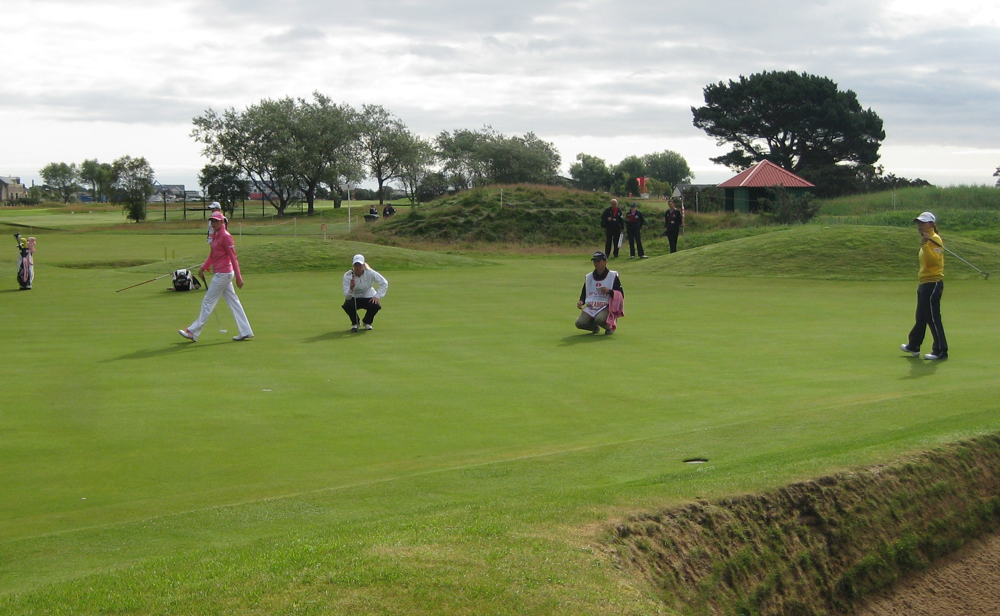
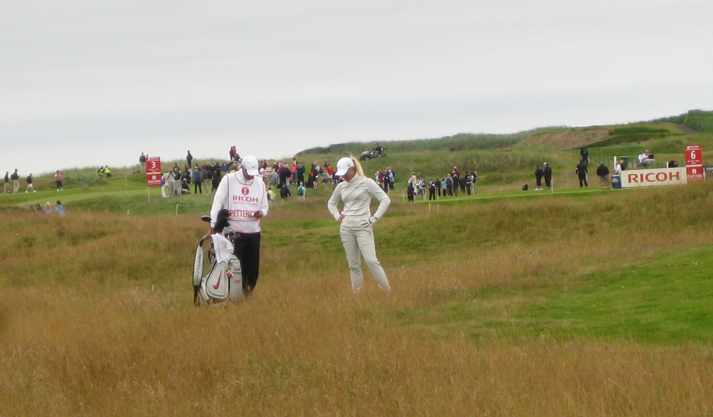
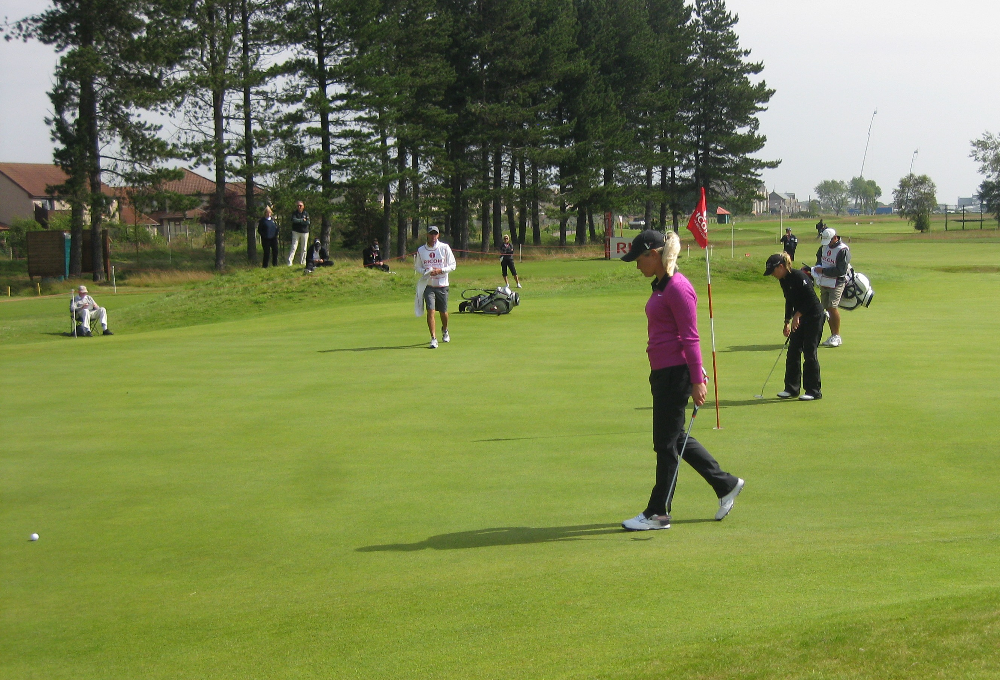

Women's British Open 2011
Friday July 29 2011
This year I decided not to do the whole week at the Women's British Open, just the weekend. I drove up as far as Falkirk on Thursday evening and spent the night in the Premier Inn Falkirk (Larbert). Early Friday morning, after a 5.55 alarm call, I left Falkirk at 6.05 am. Obviously no time for breakfast. I arrived at the Public Parking set aside on the way into Carnoustie at 7.30am. There was a shuttle bus to take us in to Carnoustie town. We were dropped at a place called The 19th and there was a significant walk to the course under the railway line. I arrived at the course in time to see the 7.47 tee off time with Se Ri Pak and her group. I followed Se Ri's group out to the first and watched them teeing off on the 2nd. Transferred attention to the 3rd green were I found Karen Stupples, Natalie Gulbis and Xtina. I went with this grouping up the fourth and followed them off the fifth tee. I crossed the fairway as Xtina, Bobby and Karen were talking about M not following Sophie who was in group behind. Transfered over to the 7th to watch the group of Juli Inskster and Jiyai Shin. Juli arrived at her ball in the rough and sighed deeply. Even bigger sigh when she saw her next shot that had ended up in the deep front bunker.
{kind=link}
Wandered off to catch up with Tutta's group on the 9th tee. She was 4 under for the day and back to level par. Paula Creamer had hit into the fairway bunker. Had to just bunt it out. Was walking with Ron Sirak as he tweeted. Mrs Creamer and Mr and Mrs Pettersen were also walking with us. Followed them down the 10th. Mrs Pettersen was on a buttie run from the shop by the 11th green. Watched them tee off on 11 and waited for next group of Inkster and Jiyai Shin. Caught up with Tutta's group at the 12th green. Watched Ron Sirak twittering. Followed this group all the way in. Then found my usual buttie girl's van, so had a Bacon buttie, tea and bottle of water, and checked out the big score board. Then headed to the chipping green where I found Becky Brewerton, Sophie Gustafson and Ai Miyazato. Bam Bam was listening to music.I headed off to the first fairway to see the Wie, Ai, Choi grouping start their day. Wandered off to the third green where sat and watched some groups coming through, including Maria Hjorth and Angela Stanford. A quick sit in the grandstand behind the 18th, and then I sat and got a worms eye view of the 16th green, where I caught up with Caroline Hedwall and Anna Nordquist, and LD and Inky. After a very early start, called it a day, got the shuttle back to the car, and went and checked into my hotel.
Saturday July 30 2011
I arrived at the course at about 9.30 and saw Suzann Pettersen on the putting green. Not many were dropping. She headed off to the range and so did I (She got a lift). Spotted Vicky Hurst (with her mother obviously) practising bunker shots. On the range Tutta was hitting next to Karen Stupples her pair for the day. Despite Karen having her headphones in they had a bit of a chat. No sign of Bobby for ages. Michelle Wie stopped to chat to Tutta on her way of the range. They seemed to be comparing outfits (both being dressed by Nike). Michelle seemed to be suggesting her trousers were too tight when bending down. Went out to the landing ground of the 1st and watched Michelle Wie and Stacey Lewis play their approach shots. On the 1st hole neither of them had a good birdie chance but made par. On the second Tutta hid a perfect drive but her short iron was wide right. She was visibly not happy and threw the club at her bag. On the 3rd she was on totally the wrong side of a nasty pin position. Three putt and dropped shot. On the par five 6th, Tutta hit into the longish wispy stuff and had to layup which she did OK only. Par only. On the par 3 8th, Tutta's tee shot looked good but it just kept running off the green at the back. Her first putt was a bit short and another 3 putt looked on the cards, but she nailed the par putt. Karen complimented her on a good putt read.
{kind=link}
At the 9th hole, Tutta's tee shot hit the front bank of the RHS fairway bunker and dropped in. Cue enormous shout of frustration (possibly Anglo-Saxon) from Tutta. She got the ball quite a way out of the bunker, but her pitch from the fairway was poor and another shot was lost. Suzann hit her second shot into the 10th and seemed to like it, then moved to the right to try and see where it had gone. Dave was bent over trying to spot it. Next thing there was massive cheering and clapping from the green. Karen eventually shouted over to Suzann. I think you holed it. Suzann looked over at her puzzled. Karen said it went in. Suzann said, it went in?. When Karen said Yes, Suzann threw her club in the air saying there had better be a reaction even if delayed!
There was quite a delay when they got to the 17th tee, and Tutta and Karen had a really good chinwag. Once those two had finished their round I headed back to my worms eye view by the 16th green. Paula Creamer, Caroline Hedwall, and Yani Tseng were seen, before I headed back out to the car at the end of the day.
Sunday July 31 2011
I was busting to go to the loo when I arrived at the course so no time to take a photo of Wie on the putting green. No Ma and Pa and she looked bloody daft in grey leggings and a very short pink skirt. I made it out to the landing area of the 1st hole in time to see Sandra Gal . Tutta and Cristie Kerr were in the next group and they were having a great chinwag walking up the first. Both hit great approach shots on the first and both made the birdie putts to get to -2. Cristie hit her drive left on the second up onto the bank and her second ended in the front left bunker. She made a great up and down. Tutta was bang in the fairway with her drive but pushed her approach to the right of the pin. Another par for both.The 3rd saw the pair of them close in the fairway, but no birdie for either. The 4th had Tutta in the rough to the left. She had a birdie putt but never looked like making it. Cristie just missed her birdie. The 5th had Tutta in the rough again to the left. Cristie was just in front of the right hand side fairway bunker. Both made par. I was identified and talked too by one of the guys (Swedish I think) who adds great pictures to Wikipedia. Turns out he had media credentials so in my mind that's cheating.
 Both drives on the par 5 6th were bang in the centre. Cristie hit her approach first and immediately dopped her club, screamed in rage and balled both her fists. It was someway off to the right from the way people were pointing. She still had her fists balled when I looked back. She picked up the club and immediately whacked it hard into the ground. Tutta's 2nd hit the green. When we got to Cristie's ball it wasn't too bad. She was behind the greenside bunkers and had little green to play with. She hit a gorgeous high flop shot which landed soft and rolled a bit towards the hole. Mrs Pettersen in particular was locquacious with praise. Tutta just missed eagle putt. Both now -3.
{kind=link}
Tutta's tee shot on 7 went into a fairway bunker close to the lip. All she could do was advance it out. Her approach left her a long par putt which she missed. Back to -2. At the 8th Tutta managed to stay on the green but Cristie's slide off the back towards the TV tower. The camaraman was just arriving to set up and she very curtly told him to stand still and stop what he was doing, twice. She left her first putt short but made a nice par putt. Tutta's birdie try just missed to her visible frustration.
Going down 10 Cristie placed an order for a ham and cheese sandwich with her travelling entourage which was dutifully delivered. Two pars on 10 and another two followed on the 11th. Both just missed makable putts. Tutta's drive on the twelfth was a little right and just in the first cut of rough. The wind got hold of her approach shot and she ended up on the bank close to where the spectators view from. She hit a lovely pitch shot and left herself tap in par. Cristie was in danger of three putting from miles away but again made a great par save putt. On the 13th, Tutta's ball pitched once on the green and leapt into the bunker. She indicated that she hit something in the sand on her bunker shot and the putt was over 4 feet away so no surprise she missed and made bogey. Cristie could not believe it when she missed her birdie putt. Drives on 14 were fine but the wind interfered with Tutta's second and she ended up on the down slope off a little bank in the middle of the fairway. Her 3rd went shooting off a flier lie to the back of the green. Her putt was woefully short and she missed the par putt. Another bogey and she was so pissed at bogeying the Par 5.
Her drive on 15 ended up in nasty stuff on top of a bank on the LHS of the fairway. Frustration levels reached their peak and she exploded with the expression: "Why the fuck didn't that carry". The driver got thrown to the ground in disgust. Once Dave arrived with the bag the driver got picked up and thrown into the bag with a vengence. Her next shot ended up off the back of the green, tangled up in the TV cables. I left her, absolutely steaming, waiting for a rules official.
I saw Yani Tseng playing the first, Pat Hurst playing out of a bush, Karrie Webb and Angela Stanford on the greens. Paula Creamer found herself in a similar situation to Tutta, off the back of the green by the TV cables. I was shouted at by Colin Cann for taking photos. I headed off for home as I had a long way to go to get back to Wilmslow